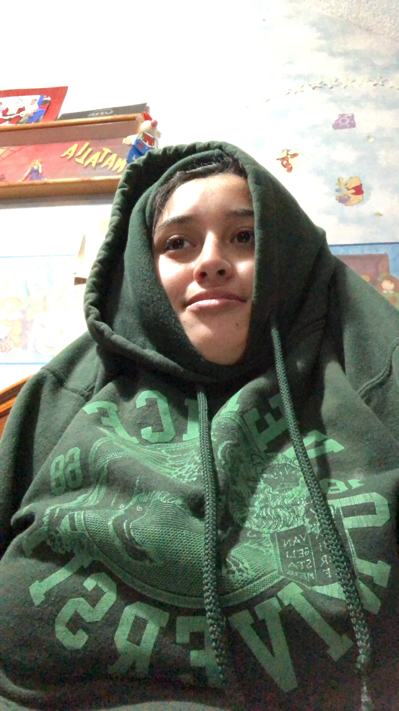

Sobre la Clase
-
Diseño de la Información
- Impartida por el poderosísimo Eduard Martín-Borregón.
- Me dolió el cerebro pero estuvo chido.
- Creía que sabía usar excel hasta que llegué aquí.
- Cuando me dijeron que si estudiaba comunicación me podía olvidar de los números me mintieron.
- La única clase del subsistema en la que me han enseñado algo diferente en lugar de sólo ponerme a escribir a lo menso :)
Sobre mi
-

Natalia Mandujano Velazquez
- 21 años.
- 8º semestre de comunicación.
- Subsistema de periodismo.
- Perpetuamente confundida.
- Mi media neurona y yo somos invencibles.
- Chismosa, chistosa y chilapastrosa.
Trabajo final
Las Obligaciones del Patrón: Cómo y Por Qué Asegurar a Las Empleadas Domésticas
El trabajo doméstico remunerado es tan común en México que 4% de la población ocupada de personas de 15 y más años se dedica a ello. Sin embargo, las personas que se dedican al trabajo doméstico, particularmente las mujeres, sufren de condiciones laborales que lejos de ser dignas, son precarias, y se requiere de la colaboración de las y los empleadores para mejorarlas...